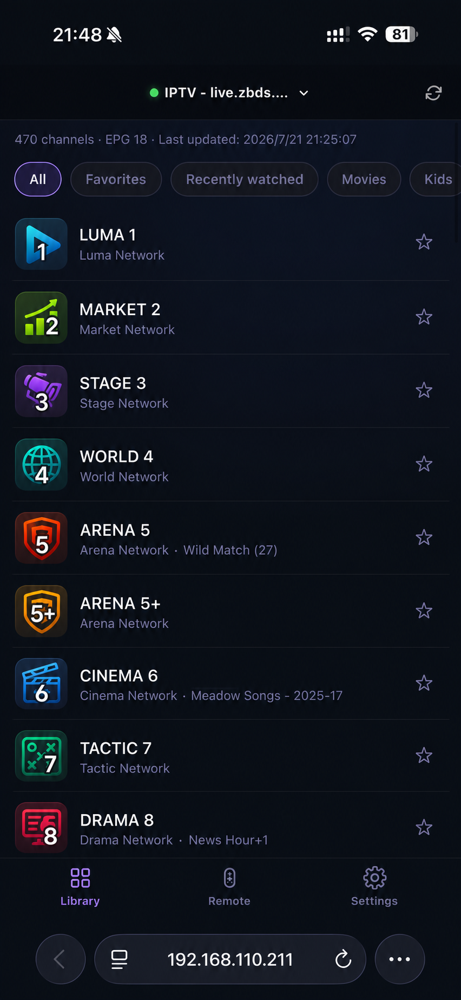
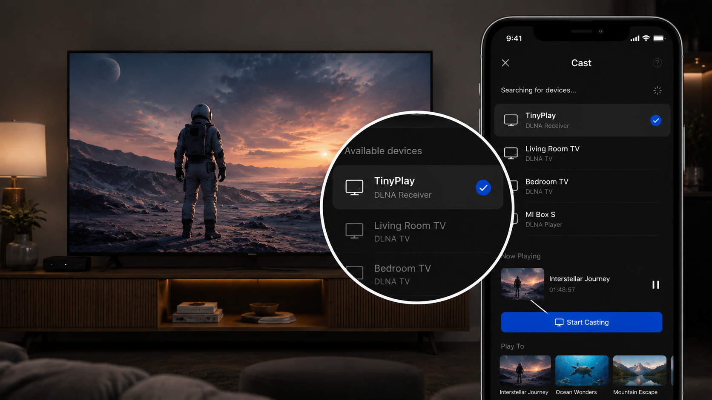

电视盒子很省心，但不一定够自由
想用电脑端软件、NAS、媒体服务器或自己的直播源时，电视盒子往往又多了一层限制。
把小主机变成客厅播放器 HTPC
把闲置的 Windows 小主机或 Mac mini 接上电视。手机扫码即可选电影、拖进度、切字幕、调倍速。没有复杂的插件系统和电视端菜单。打开手机，找到想看的，剩下的交给接电视的电脑。

WHY TINYPLAY
想用电脑端软件、NAS、媒体服务器或自己的直播源时，电视盒子往往又多了一层限制。
电脑接电视能做很多事，问题是它原本不是为沙发上的选片、搜索和拖进度设计的。
手机给你现代、顺手的控制界面；小主机继续负责内容、播放和格式兼容。
内容入口，都在手机里
从 Emby、Jellyfin、Plex 和文件夹中找片，或导入 M3U/M3U8 直播频道。选好以后，手机接着就是遥控器。



接收局域网投屏
让这台接电视的电脑，出现在局域网应用的投屏设备列表里。

手机控制在线视频中文 Beta
创新的手机 / 电脑 Vim 联动：不用鼠标，也能快速选视频、控制播放、调倍速。
* 仍需在电脑端登录账号；能看什么、能不能跳广告，取决于平台和你的会员。

HOW IT WORKS
在 Windows 小主机或 Mac 上运行 TinyPlay。
添加媒体服务器或网络共享，让电脑通过 HDMI 连接电视。
手机扫描二维码，选片、播放，坐回沙发。
READY WHEN YOU ARE
Windows 10+ / macOS 13+